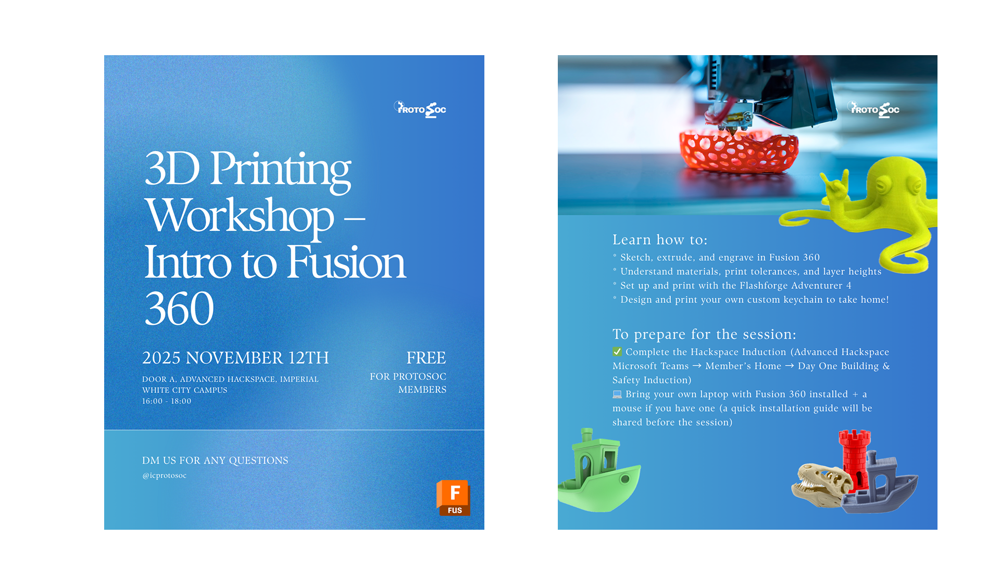
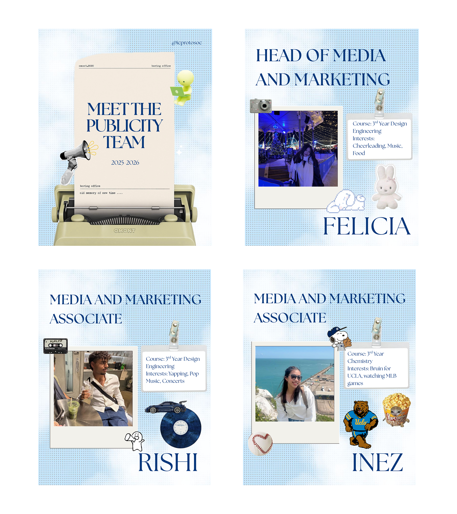
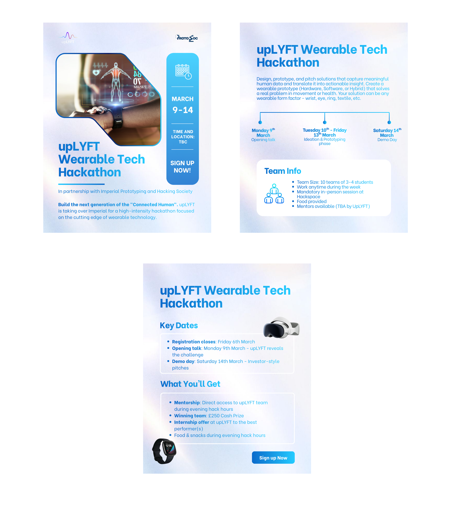
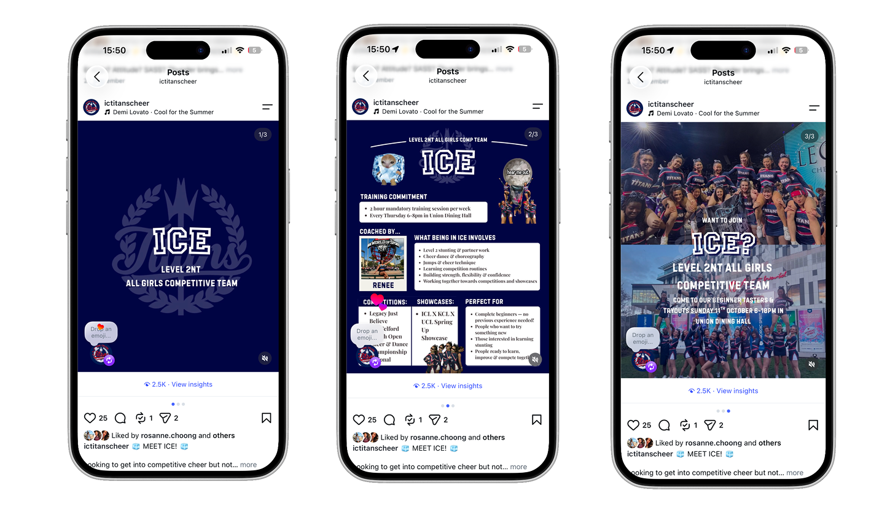
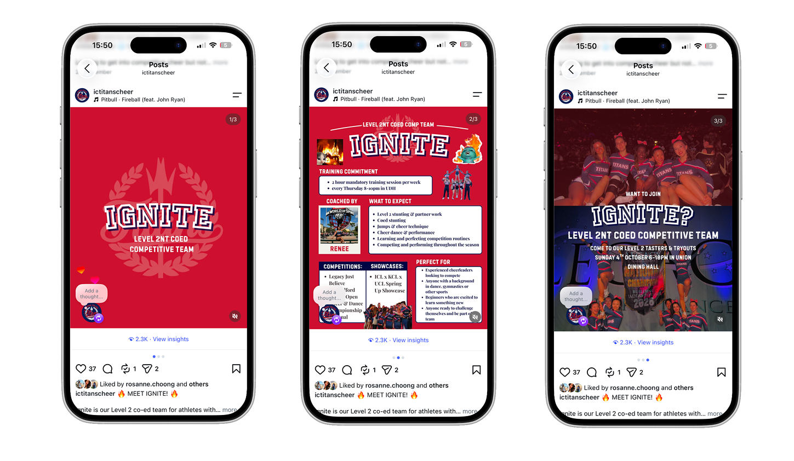

Social Media Posters
Imperial Prototyping and Hacking Society
Overview
A selection of graphic design posters created for social media during my time as Head of Media and Marketing at the Imperial Prototyping and Hacking Society. These designs were developed to promote events, increase engagement, and establish a cohesive visual identity for the society.



Imperial Cheerleading Society
Overview
A selection of graphic design posters created for social media during my time as President/Chair at the Imperial Cheerleading Society. These designs were developed to promote events, increase engagement, and establish a cohesive visual identity for the society.



